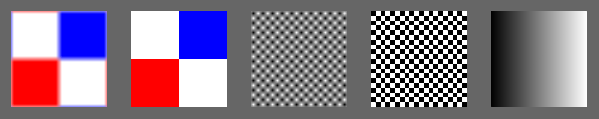
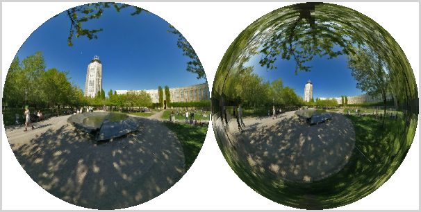

Section 6.4
Image Textures
Textures play an essential role in 3D graphics, and support for image textures is built into modern GPUs on the hardware level. In this section, we look at the WebGL API for image textures. Image textures in OpenGL 1.1 were covered in Section 4.3. Much of that section is still relevant in modern OpenGL, including WebGL. So, as we cover image textures in WebGL, much of the material will not be new to you. However, there is one feature that is new since OpenGL 1.1: texture units.
6.4.1 Texture Units and Texture Objects
A texture unit, also called a texture mapping unit (TMU) or a texture processing unit (TPU), is a hardware component in a GPU that does sampling. Sampling is the process of computing a color from an image texture and texture coordinates. Mapping a texture image to a surface is a fairly complex operation, since it requires more than just returning the color of the texel that contains some given texture coordinates. It also requires applying the appropriate minification or magnification filter, possibly using mipmaps if available. Fast texture sampling is one of the key requirements for good GPU performance.
Texture units are not to be confused with texture objects. We encountered texture objects in Subsection 4.3.7. A texture object is a data structure that contains the color data for an image texture, and possibly for a set of mipmaps for the texture, as well as the values of texture properties such as the minification and magnification filters and the texture repeat mode. A texture unit must access a texture object to do its work. The texture unit is the processor; the texture object holds the data that is processed.
(By the way, I should really be more careful about throwing around the terms "GPU" and "hardware." Although a texture unit probably does use an actual hardware component in the GPU, it could also be emulated, more slowly, in software. And even if there is hardware involved, having eight texture units does not necessarily mean that there are eight hardware components; the texture units might share time on a smaller number of hardware components. Similarly, I said previously that texture objects are stored in memory in the GPU, which might or might not be literally true in a given case. Nevertheless, you will probably find it conceptually easier to think of a texture unit as a piece of hardware and a texture object as a data structure in the GPU.)
In GLSL, texture lookup is done using sampler variables. A sampler variable is a variable in a shader program of type sampler2D or samplerCube. A sampler2D is used to do lookup in a standard texture image; a samplerCube is used to do lookup in a cubemap texture (Subsection 5.3.4). The value of a sampler variable is a reference to a texture unit. The value tells which texture unit is invoked when the sampler variable is used to do texture lookup. Sampler variables must be declared as global uniform variables. It is not legal for a shader program to assign a value to a sampler variable. The value must come from the JavaScript side.
On the JavaScript side, the available texture units are numbered 0, 1, 2, ..., where the maximum value is implementation dependent. The number of units can be determined as the value of the expression
gl.getParameter( gl.MAX_COMBINED_TEXTURE_IMAGE_UNITS )
(Please remember, again, that gl here is the name of a JavaScript variable that refers to the WebGL context, and that the name is up to the programmer.)
As far as JavaScript is concerned, the value of a sampler variable is an integer. If you want a sampler variable to use texture unit number 2, then you set the value of the sampler variable to 2. This can be done using the function gl.uniform1i (Subsection 6.1.4). For example, suppose a shader program declares a sampler variable
uniform sampler2D u_texture;
To set its value from JavaScript, you need the location of the variable in the shader program. If prog is the shader program, the location is obtained by calling
u_texture_location = gl.getUniformLocation( prog, "u_texture" );
Then, you can tell the sampler variable to use texture unit number 2 by calling
gl.uniform1i( u_texture_location, 2 );
Note that the integer value is not accessible in GLSL. The integer tells the sampler which texture unit to use, but there is no way for the shader program to find out the number of the unit that is being used.
To use an image texture, you also need to create a texture object, and you need to load an image into the texture object. You might want to set some properties of the texture object, and you might want to create a set of mipmaps for the texture. And you will have to associate the texture object with a texture unit. All this is done on the JavaScript side.
The command for creating a texture object is gl.createTexture(). The command in OpenGL 1.1 was glGenTextures. The WebGL command is easier to use. It creates a single texture object and returns a reference to it. For example,
textureObj = gl.createTexture();
This just allocates some memory for the object. In order to use it, you must first "bind" the texture object by calling gl.bindTexture. For example,
gl.bindTexture( gl.TEXTURE_2D, textureObj );
The first parameter, gl.TEXTURE_2D, is the texture target. This target is used for working with an ordinary texture image. There is a different target for cubemap textures.
The function gl.texImage2D is used to load an image into the currently bound texture object. We will come back to that in the next subsection. But remember that this command and other commands always apply to the currently bound texture object. The texture object is not mentioned in the command; instead, the texture object must be bound before the command is called.
You also need to tell a texture unit to use the texture object. Before you can do that, you need to make the texture unit "active," which is done by calling the function gl.activeTexture. The parameter is one of the constants gl.TEXTURE0, gl.TEXTURE1, gl.TEXTURE2, ..., which represent the available texture units. (The values of these constants are not 0, 1, 2, ....) Initially, texture unit number 0 is active. To make texture unit number 2 active, for example, use
gl.activeTexture( gl.TEXTURE2 );
(This function should really have been called activeTextureUnit). If you then call
gl.bindTexture( gl.TEXTURE_2D, textureObj );
to bind a texture object, while texture unit 2 is active, then the the texture object textureObj is bound to texture unit number 2. The binding just tells the texture unit which texture object to use. That is, texture unit 2 will do ordinary texture lookups using the image and settings that are stored in textureObj. A texture object can be bound to several texture units at the same time. However, a given texture unit can have only one bound TEXTURE_2D at a time.
So, working with texture images in WebGL involves working with texture objects, texture units, and sampler variables. The relationship among the three is illustrated in this picture:

A sampler variable uses a texture unit, which uses a texture object, which holds a texture image. The JavaScript commands for setting up this chain are shown in the illustration. To apply a texture image to a primitive, you have to set up the entire chain. Of course, you also have to provide texture coordinates for the primitive, and you need to use the sampler variable in the shader program to access the texture.
Suppose that you have several images that you would like to use on several different primitives. Between drawing primitives, you need to change the texture image that will be used. There are at least three different ways to manage the images in WebGL:
- You could use a single texture object and a single texture unit. The bound texture object, the active texture unit, and the value of the sampler variable can be set once and never changed. To change to a new image, you would use gl.texImage2D to load the image into the texture object. This is essentially how things were done in OpenGL 1.0. It's very inefficient, except when you are going to use each image just once. That's why texture objects were introduced.
- You could use a different texture object for each image, but use just a single texture unit. The active texture and the value of the sampler variable will never have to be changed. You would switch to a new texture image using gl.bindTexture to bind the texture object that contains the desired image.
- You could use a different texture unit for each image. You would load a different image into its own texture object and bind that object to one of the texture units. You would switch to a new texture image by changing the value of the sampler variable.
I don't know how options 2 and 3 compare in terms of efficiency. Note that you are only forced to use more than one texture unit if you want to apply more than one texture image to the same primitive. To do that, you will need several sampler variables in the shader program. They will have different values so that they refer to different texture units, and the color of a pixel will somehow depend on samples from both images. This picture shows two textures being combined in simple ways to compute the colors of pixels in a textured square:

In the image on the left, a grayscale "brick" image is multiplied by an "Earth" image; that is, the red component of a pixel is computed by multiplying the red component from the brick texture by the red component from the Earth texture, and same for green and blue. On the right, the same Earth texture is subtracted from a "cloth" texture. Furthermore, the pattern is distorted because the texture coordinates were modified before being used to sample the textures, using the formula texCoords.y += 0.25*sin(6.28*texCoords.x). That's the kind of thing that could only be done with programmable shaders! The images are taken from the following demo. Try it out!
You might want to view the source code to see how the textures are programmed. Two texture units are used. The values of two uniform sampler variables, u_texture1 and u_texture2, are set during initialization with the code
u_texture1_location = gl.getUniformLocation(prog, "u_texture1"); u_texture2_location = gl.getUniformLocation(prog, "u_texture2"); gl.uniform1i(u_texture1_location, 0); gl.uniform1i(u_texture2_location, 1);
The values are never changed. The program uses several texture images. There is a texture object for each image. The texture objects are stored in an array, textureObjects. Two popup menus allow the user to select which texture images are applied to the primitive. This is implemented in the drawing routine by binding the two selected texture objects to texture units 0 and 1, which are the units used by the two sampler variables. The code for that is:
var tex1Num = Number(document.getElementById("textureChoice1").value);
gl.activeTexture( gl.TEXTURE0 );
gl.bindTexture( gl.TEXTURE_2D, textureObjects[tex1Num] );
var tex2Num = Number(document.getElementById("textureChoice2").value);
gl.activeTexture( gl.TEXTURE1 );
gl.bindTexture( gl.TEXTURE_2D, textureObjects[tex2Num] );
Getting images into the texture objects is another question, which we turn to next.
6.4.2 Working with Images
An image can be loaded into a texture object using the function gl.texImage2D. For use with WebGL, this function usually has the form
gl.texImage2D( target, 0, gl.RGBA, gl.RGBA, gl.UNSIGNED_BYTE, image );
The target is gl.TEXTURE_2D for ordinary textures; there are other targets for loading cubemap textures. The second parameter is the mipmap level, which is 0 for the main image. Although it is possible to load individual mipmaps, that is rarely done. The next two parameters give the format of the texture inside the texture object and in the original image. In WebGL, the two format parameters must have the same value. Since web images are stored in RGBA format, there is rarely a need to use anything else. But you can use gl.RGB if you don't need the alpha component. And by using gl.LUMINANCE or gl.LUMINANCE_ALPHA, you can convert the image to grayscale. (Luminance is a weighted average of red, green, and blue that approximates the perceived brightness of a color.) The fourth parameter is always going to be gl.UNSIGNED_BYTE, indicating that the colors in the image are stored using one byte for each color component. Although other values are possible, they don't really make sense for web images.
The last parameter in the call to gl.texImage2D is the image. Ordinarily, image will be a DOM image element that has been loaded asynchronously by JavaScript. The image can also be a <canvas> element. This means that you can draw on a canvas, using the HTML canvas 2D graphics API, and then use the canvas as the source for a texture image. You can even do that with an off-screen canvas that is not visible on the web page.
The image is loaded into the texture object that is currently bound to target in the currently active texture unit. There is no default texture object; that is, if no texture has been bound when gl.texImage2D is called, an error occurs. The active texture unit is the one that has been selected using gl.activeTexture, or is texture unit 0 if gl.activeTexture has never been called. A texture object is bound to the active texture unit by gl.bindTexture. This was discussed earlier in this section.
Using images in WebGL is complicated by the fact that images are loaded asynchronously. That is, the command for loading an image just starts the process of loading the image. You can specify a callback function that will be executed when the loading completes. The image won't actually be available for use until after the callback function is called. When loading an image to use as a texture, the callback function should load the image into a texture object. Often, it will also call a rendering function to draw the scene, with the texture image.
The sample program webgl/simple-texture.html is an example of using a single texture on a triangle. Here is a function that is used to load the texture image in that program. The texture object is created before the function is called.
/**
* Loads a texture image asynchronously. The first parameter is the url
* from which the image is to be loaded. The second parameter is the
* texture object into which the image is to be loaded. When the image
* has finished loading, the draw() function will be called to draw the
* triangle with the texture. (Also, if an error occurs during loading,
* an error message is displayed on the page, and draw() is called to
* draw the triangle without the texture.)
*/
function loadTexture( url, textureObject ) {
var img = new Image(); // A DOM image element to represent the image.
img.onload = function() {
// This function will be called after the image loads successfully.
// We have to bind the texture object to the TEXTURE_2D target before
// loading the image into the texture object.
gl.bindTexture(gl.TEXTURE_2D, textureObject);
gl.texImage2D(gl.TEXTURE_2D,0,gl.RGBA,gl.RGBA,gl.UNSIGNED_BYTE,img);
gl.generateMipmap(gl.TEXTURE_2D); // Create mipmaps; you must either
// do this or change the minification filter.
draw(); // Draw the canvas, with the texture.
}
img.onerror = function(e,f) {
// This function will be called if an error occurs while loading.
document.getElementById("headline").innerHTML =
"<p>Sorry, texture image could not be loaded.</p>";
draw(); // Draw without the texture; triangle will be black.
}
img.src = url; // Start loading of the image.
// This must be done after setting onload and onerror.
}
Note that image textures for WebGL should be power-of-two textures. That is, the width and the height of the image should each be a power of 2, such as 128, 256, or 512. You can, in fact, use non-power-of-two textures, but you can't use mipmaps with such textures, and the only texture repeat mode that is supported by such textures is gl.CLAMP_TO_EDGE
There are several parameters associated with a texture object, including the texture repeat modes and the minification and magnification filters. They can be set using the function gl.texParameteri. The setting applies to the currently bound texture object. Most of the details are the same as in OpenGL 1.1 (Subsection 4.3.3). For example, the minification filter can be set to LINEAR using
gl.texParameteri( gl.TEXTURE_2D, gl.TEXTURE_MIN_FILTER, gl.LINEAR);
Recall that the default minification filter won't work without mipmaps. To get a working texture, you have to change the minification filter or install a full set of mipmaps. Fortunately, WebGL has a function that will generate the mipmaps for you:
gl.generateMipmap( gl.TEXTURE_2D );
The texture repeat modes determine what happens when texture coordinates lie outside the range 0.0 to 1.0. There is a separate repeat mode for each direction in the texture coordinate system. In WebGL, the possible values are gl.REPEAT, gl.CLAMP_TO_EDGE, and gl.MIRRORED_REPEAT. The default is gl.REPEAT. The mode CLAMP_TO_EDGE was called CLAMP in OpenGL 1.1, and MIRRORED_REPEAT is new in WebGL. With MIRRORED_REPEAT, the texture image is repeated to cover the entire plane, but every other copy of the image is reflected. This can eliminate visible seams between the copies. To set a texture to use mirrored repeat in both directions, use
gl.texParameteri( gl.TEXTURE_2D, gl.TEXTURE_WRAP_S, gl.MIRRORED_REPEAT); gl.texParameteri( gl.TEXTURE_2D, gl.TEXTURE_WRAP_T, gl.MIRRORED_REPEAT);
In WebGL, texture coordinates are usually input to the vertex shader as an attribute of type vec2. They are communicated to the fragment shader in a varying variable. Often, the vertex shader will simply copy the value of the attribute into the varying variable. Another possibility is to apply an affine texture transformation to the coordinates in the vertex shader before passing them on to the fragment shader. In the fragment shader, the texture coordinates are used to sample a texture. The GLSL function for sampling an ordinary texture is
texture2D( samplerVariable, textureCoordinates );
where samplerVariable is the uniform variable of type sampler2D that represents the texture, and textureCoordinates is a vec2 containing the texture coordinates. The return value is an RGBA color, represented as a value of type vec4. As a very minimal example, here is a fragment shader that simply uses the sampled value from the texture as the color of the pixel.
precision mediump float;
uniform sampler2D u_texture;
varying vec2 v_texCoords;
void main() {
vec4 color = texture2D( u_texture, v_texCoords );
gl_FragColor = color;
}
This shader is from the sample program webgl/simple-texture.html.
Textures are sometimes used on primitives of type gl.POINTS. In that case, it's natural to get the texture coordinates for a pixel from the special fragment shader variable gl_PointCoord. A point is rendered as a square, and the coordinates in gl_PointCoord range from 0.0 to 1.0 over that square. So, using gl_PointCoord means that one copy of the texture will be pasted onto the point. If the POINTS primitive has more than one vertex, you will see a copy of the texture at the location of each vertex. This is an easy way to put an image, or multiple copies of an image, into a scene. The technique is sometimes referred to as "point sprites."
The following demo draws a single textured primitive of type gl.POINTS, so you can see what it looks like. In the demo, only a circular cutout from each square point is drawn.
The pixel data for a texture image in WebGL is stored in memory starting with the row of pixels at the bottom of the image and working up from there. When WebGL creates the texture by reading the data from an image, it assumes that the image uses the same format. However, images in a web browser are stored in the opposite order, starting with the pixels in the top row of the image and working down. The result of this mismatch is that texture images will appear upside down. You can account for this by modifying your texture coordinates. However, you can also tell WebGL to invert the images for you as it "unpacks" them. To do that, call
gl.pixelStorei( gl.UNPACK_FLIP_Y_WEBGL, 1 );
Generally, you can do this as part of initialization. Note however that for gl.POINTS primitives, the coordinate system used by gl_PointCoord is already upside down, with the y-coordinate increasing from top to bottom. So, if you are loading an image for use on a POINTS primitive, you might want to set gl.UNPACK_FLIP_Y_WEBGL to its default value, 0.
6.4.3 More Ways to Make Textures
We have seen how to create a texture from an image or canvas element using gl.texImage2D. There are several more ways to make an image texture in WebGL. First of all, the function
glCopyTexImage2D( target, mipmapLevel, internalFormat,
x, y, width, height, border );
which was covered in Subsection 4.3.6 also exists in WebGL. This function copies data from the color buffer (where WebGL renders its images) into the currently bound texture object. The data is taken from the rectangular region in the color buffer with the specified width and height and with its lower left corner at (x,y). The internalFormat is usually gl.RGBA. For WebGL, the border must be zero. For example,
glCopyTexImage2D( gl.TEXTURE_2, 0, gl.RGBA, 0, 0, 256, 256, 0);
This takes the texture data from a 256-pixel square in the bottom left corner of the color buffer. (In a later chapter, we will see that it is actually possible, and more efficient, for WebGL to render an image directly to a texture object, using something called a "framebuffer.")
More interesting, perhaps, is the ability to take the texture data directly from an array of numbers. The numbers will become the color component values for the pixels in the texture. The function that is used for this is an alternative version of texImage2D:
texImage2D( target, mipmapLevel, internalFormat, width, height,
border, dataFormat, dataType, dataArray )
and a typical function call would have the form
gl.texImage2D(gl.TEXTURE_2D, 0, gl.RGBA, 16, 16,
0, gl.RGBA, gl.UNSIGNED_BYTE, pixels);
Compared to the original version of texImage2D, there are three extra parameters, width, height, and border. The width and height specify the size of the texture image. For WebGL, the border must be zero, and the internalFormat and dataFormat must be the same.
The last parameter in this version of texImage2D must be a typed array of type Uint8Array or Uint16Array, depending on the dataFormat of the texture. My examples will use Uint8Array and texture format gl.RGBA or gl.LUMINANCE.
For an RGBA texture, four color component values are needed for each pixel. The values will be given as unsigned bytes, with values ranging from 0 to 255, in a Uint8Array. The length of the array will be 4*width*height (that is, four times the number of pixels in the image). The data for the bottom row of pixels comes first in the array, followed by the row on top of that, and so on, with the pixels in a given row running from left to right. And within the data for one pixel, the red component comes first, followed by the blue, then the green, then the alpha.
As an example of making up texture data from scratch, let's make a 16-by-16 texture image, with the image divided into four 8-by-8 squares that are colored red, white, and blue. The code uses the fact that when a typed array is created, it is initially filled with zeros. We just have to change some of those zeros to 255.
var pixels = new Uint8Array( 4*16*16 ); // four bytes per pixel
for (var i = 0; i < 16; i++) {
for (var j = 0; j < 16; j++) {
var offset = 64*i + 4*j ; // starting index of data for this pixel
pixels[offset + 3] = 255; // alpha value for the pixel
if ( i < 8 && j < 8) { // bottom left quadrant is red
pixels[offset] = 255; // set red component to maximum
}
else if ( i >= 8 && j >= 8 ) { // top right quadrant is blue
pixels[offset + 2] = 255; // set blue component to maximum
}
else { // the other two quadrants are white
pixels[offset] = 255; // set all components to maximum
pixels[offset + 1] = 255;
pixels[offset + 2] = 255;
}
}
}
texture = gl.createTexture();
gl.bindTexture(gl.TEXTURE_2D, texture);
gl.texImage2D(gl.TEXTURE_2D, 0, gl.RGBA, 16, 16,
0, gl.RGBA, gl.UNSIGNED_BYTE, pixels);
gl.texParameteri(gl.TEXTURE_2D, gl.TEXTURE_MIN_FILTER, gl.LINEAR);
The last line is there because the default minification filter won't work without mipmaps. The texture uses the default magnification filter, which is also gl.LINEAR. This texture is used on the leftmost square in the image shown below. The image is from the sample program webgl/texture-from-pixels.html.

Note the blending along the edges between colors in the leftmost square. The blending is caused by the gl.LINEAR magnification filter. The second square uses the same texture, but with the gl.NEAREST magnification filter, which eliminates the blending. The same effect can be seen in the next two squares, which use a black/white checkerboard pattern, one with gl.Linear as the magnification filter and one using gl.NEAREST. The texture is repeated ten times horizontally and vertically on the square. In this case, the texture is a tiny 2-by-2 image with two black and two white pixels.
As another example, consider the rightmost square in the image. The gradient effect on that square comes from a texture. The texture size is 256-by-1 pixels, with the color changing from black to white along the length of the texture. One copy of the texture is mapped to the square. For the gradient texture, I used gl.LUMINANCE as the texture format, which means that the data consists of one byte per pixel, giving the grayscale value for that pixel. The texture can be created using
var pixels = new Unit8Array( 256 ); // One byte per pixel
for ( var i = 0; i < 256; i++ ) {
pixels[i] = i; // Grayscale value for pixel number i is i.
}
gl.texImage2D(gl.TEXTURE_2D, 0, gl.LUMINANCE, 256, 1,
0, gl.LUMINANCE, gl.UNSIGNED_BYTE, pixels);
See the sample program for more detail.
6.4.4 Cubemap Textures
We encountered cubemap textures in Subsection 5.3.4, where saw how they are used in three.js for skyboxes and environment mapping. WebGL has built-in support for cubemap textures. Instead of representing an ordinary image texture, a texture object can hold a cubemap texture. And two texture objects can be bound to the same texture unit simultaneously, one holding an ordinary texture and one holding a cubemap texture. The two textures are bound to different targets, gl.TEXTURE_2D and gl.TEXTURE_CUBE_MAP. A texture object, texObj, is bound to the cubemap target in the currently active texture unit by calling
gl.bindTexture( gl.TEXTURE_CUBE_MAP, texObj );
A given texture object can be either a regular texture or a cubemap texture, not both. Once it has been bound to one texture target, it cannot be rebound to the other target.
A cubemap texture consists of six images, one for each face of the cube. A texture object that holds a cubemap texture has six image slots, identified by the constants
gl.TEXTURE_CUBE_MAP_NEGATIVE_X gl.TEXTURE_CUBE_MAP_POSITIVE_X gl.TEXTURE_CUBE_MAP_NEGATIVE_Y gl.TEXTURE_CUBE_MAP_POSITIVE_Y gl.TEXTURE_CUBE_MAP_NEGATIVE_Z gl.TEXTURE_CUBE_MAP_POSITIVE_Z
The constants are used as the targets in gl.texImage2D and gl.copyTexImage2D, in place of gl.TEXTURE_2D. (Note that there are six targets for loading images into a cubemap texture object, but only one target, gl.TEXTURE_CUBE_MAP, for binding the texture object to a texture unit.) A cubemap texture is often stored as a set of six images, which must be loaded separately into a texture object. Of course, it is also possible for WebGL to create a cubemap by rendering the six images.
As usual for images on the web, there is the problem of asynchronous image loading to be dealt with. Here, for example, is a function that creates a cubemap texture in my sample program webgl/cubemap-fisheye.html:
function loadCubemapTexture() {
var tex = gl.createTexture();
var imageCt = 0; // Number of images that have finished loading.
load( "cubemap-textures/park/negx.jpg", gl.TEXTURE_CUBE_MAP_NEGATIVE_X );
load( "cubemap-textures/park/posx.jpg", gl.TEXTURE_CUBE_MAP_POSITIVE_X );
load( "cubemap-textures/park/negy.jpg", gl.TEXTURE_CUBE_MAP_NEGATIVE_Y );
load( "cubemap-textures/park/posy.jpg", gl.TEXTURE_CUBE_MAP_POSITIVE_Y );
load( "cubemap-textures/park/negz.jpg", gl.TEXTURE_CUBE_MAP_NEGATIVE_Z );
load( "cubemap-textures/park/posz.jpg", gl.TEXTURE_CUBE_MAP_POSITIVE_Z );
function load(url, target) {
var img = new Image();
img.onload = function() {
gl.bindTexture(gl.TEXTURE_CUBE_MAP, tex);
gl.texImage2D(target, 0, gl.RGBA, gl.RGBA, gl.UNSIGNED_BYTE, img);
imageCt++;
if (imageCt == 6) { // all 6 images have been loaded
gl.generateMipmap( gl.TEXTURE_CUBE_MAP );
document.getElementById("headline").innerHTML =
"Funny Cubemap (Fisheye Camera Effect)";
textureObject = tex;
draw(); // Draw the scene, using the cubemap texture.
}
}
img.onerror = function() {
document.getElementById("headline").innerHTML =
"SORRY, COULDN'T LOAD TEXTURES";
}
img.src = url;
}
}
The images for a cubemap must all be the same size. They must be square. The size should, as usual, be a power of two. For a cubemap texture, texture parameters such as the minification filter are set using the target gl.TEXTURE_CUBE_MAP, and they apply to all six faces of the cube. For example,
gl.texParameteri(gl.TEXTURE_CUBE_MAP, gl.TEXTURE_MIN_FILTER, gl.LINEAR);
Similarly, gl.generateMipmap will generate mipmaps for all six faces (so it should not be called until all six images have been loaded). Also, it is recommended that for a cube map texture, the texture wrap mode should be set to CLAMP_TO_EDGE, to avoid the possibility of visible seams between the faces of the cube. However, some implementations seem to ignore the repeat mode. Instead, they do correct blending of the images across the boundaries between faces of the cube.
In a shader program, a cube map texture is represented by a uniform variable of type samplerCube. The texture is sampled using the GLSL function textureCube. For example,
vec4 color = textureCube( u_texture, vector );
The first parameter is the samplerCube variable that represents the texture. The second parameter is a vec3. Cube map textures are not sampled using regular texture coordinates. Instead, a 3D vector is used. The idea is to pick out a point in the texture. The texture lies on the surface of a cube. To use a vector to pick out a point in the texture, cast a ray from the center of the cube in the direction given by the vector, and check where that ray intersects the cube. That is, if you put the starting point of the vector at the center of the cube, it points to the point on the cube where the texture is to be sampled.
Since we aren't doing 3D graphics in this chapter, we can't use cube maps in the ordinary way. The sample program webgl/cubemap-fisheye.html uses a cube map in an interesting, if not very useful way. The program uses 2D texture coordinates. The fragment shader transforms a pair of 2D texture coordinates into a 3D vector that is then used to sample the cubemap texture. The effect is something like a photograph produced by a fisheye camera. Here's what it looks like.

The picture on the left imitates a fisheye camera with a 170-degree field of view. On the right the field of view is 330-degrees, so that pixels near the edge of the disk actually show parts of the cube that lie behind the camera.
For each picture, the program draws a square with texture coordinates ranging from 0.0 to 1.0. In the texture coordinate system, pixels at a distance greater than 0.5 from the point (0.5,0.5) are colored white. Within the disk of radius 0.5, each circle around the center is mapped to a circle on the unit sphere. That point is then used as the direction vector for sampling the cubemap texture. The point in the texture that appears at the center of the disk is the point where the cube intersects the positive z-axis, that is, the center of the "positive z" image from the cube map. You don't actually need to understand this, but here, for your information, is the fragment shader that does the work:
#ifdef GL_FRAGMENT_PRECISION_HIGH
precision highp float;
#else
precision mediump float;
#endif
uniform samplerCube u_texture;
uniform float u_angle; // field of view angle
varying vec2 v_texCoords;
void main() {
float dist = distance( v_texCoords, vec2(0.5) );
if (dist > 0.5)
gl_FragColor = vec4(1.0); // white
else {
float x,y; // coords relative to a center at (0.5,0.5)
x = v_texCoords.x - 0.5;
y = v_texCoords.y - 0.5;
vec2 circ = normalize(vec2(x,y)); // on the unit circle
float phi = radians(u_angle/2.0)*(2.0*dist); // "latitude"
vec3 vector = vec3(sin(phi)*circ.x, sin(phi)*circ.y, cos(phi));
gl_FragColor = textureCube( u_texture, vector );
}
}